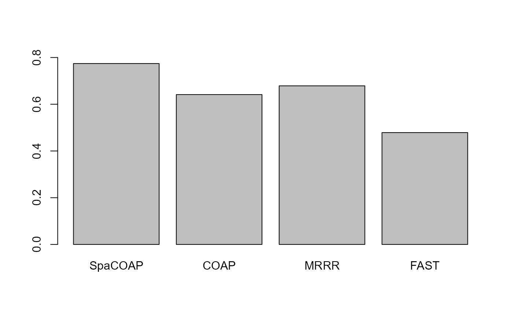

This vignette introduces the SpaCOAP workflow for the analysis of spatial multi-omics dataset.
We demonstrate the use of SpaCOAP to one mouse spleen data collected from the SPOTS platform that are here, which can be downloaded to the current working path by the following command:
url1 <- "https://github.com/feiyoung/ProFAST/SpaCOAP/main/vignettes_data/"
rna_object <- "seu_rna_over_Spleen.RDS?raw=true"
download.file(paste0(url1, rna_object),"seu_rna_over_Spleen.RDS",mode='wb')
protein_object <- "seu_adt_over_Spleen.RDS?raw=true"
download.file(paste0(url1,protein_object), 'seu_adt_over_Spleen.RDS', mode='wb')
## download annotation
download.file(paste0(url1, "cell_clusters_anno.rds?raw=true"), "cell_clusters_anno.rds", "wb")Then we load the data to R.
seu_rna_over <- readRDS("./seu_rna_over_Spleen.RDS")
seu_adt_over <- readRDS("./seu_adt_over_Spleen.RDS")
load("./cell_clusters_anno.rds")The package can be loaded with the command:
library(SpaCOAP) #
#> SpaCOAP : A spatial covariate-augmented overdispersed Poisson factor model is proposed to perform efficient latent representation learning method for high-dimensional large-scale spatial count data with additional covariates. Check out our Package website (https://feiyoung.github.io/SpaCOAP/docs/index.html) for a more complete description of the methods and analysesDefine some functions for use.
searchRadius <- function(pos, lower.med=8, upper.med=10, radius.upper= NULL){
if (!inherits(pos, "matrix"))
stop("method is only for matrix object!")
## Automatically determine the upper radius
n_spots <- nrow(pos)
idx <- sample(n_spots, min(100, n_spots))
dis <- dist(pos[idx,])
if(is.null(radius.upper)){
#radius.upper <- max(dis)
radius.upper <- sort(dis)[20] ## select the nearest 20 spots.
}
radius.lower <- min(dis[dis>0])
Adj_sp <- DR.SC:::getneighborhood_fast(pos, radius=radius.upper)
Med <- summary(Matrix::rowSums(Adj_sp))['Median']
if(Med < lower.med) stop("The radius.upper is too smaller that cannot find median neighbors greater than 4.")
start.radius <- 1
Med <- 0
message("Find the adjacency matrix by bisection method...")
maxIter <- 30
k <- 1
while(!(Med >= lower.med && Med <=upper.med)){ # ensure that each spot has about 4~6 neighborhoods in median.
Adj_sp <- DR.SC:::getneighborhood_fast(pos, radius=start.radius)
Med <- summary(Matrix::rowSums(Adj_sp))['Median']
if(Med < lower.med){
radius.lower <- start.radius
start.radius <- (radius.lower + radius.upper)/2
}else if(Med >upper.med){
radius.upper <- start.radius
start.radius <- (radius.lower + radius.upper)/2
}
message("Current radius is ", round(start.radius, 2))
message("Median of neighborhoods is ", Med)
if(k > maxIter) {
message("Reach the maximum iteration but can not find a proper radius!")
break;
}
k <- k + 1
}
return(start.radius)
}
acc_fun <- function(y1, y2){
n1 <- length(unique(y1))
n2 <- length(unique(y2))
if(n1<n2){ ## ensure n1> n2
a <- y1
y1 <- y2
y2 <- a
n1 <- length(unique(y1))
n2 <- length(unique(y2))
}
cm <- as.matrix(table(Actual = y1, Predicted = y2))
rnames <-row.names(cm)
cnames <- colnames(cm)
union_names <- union(rnames, cnames)
n <- length(union_names)
cm_new <- matrix(0, n, n)
row.names(cm_new) <- colnames(cm_new) <- union_names
for(r in 1:n2){
cm_new[rnames,cnames[r]] <- cm[rnames,cnames[r]]
}
sum(diag(cm_new)) / length(y1)
}
kappa_fun <- function(y1, y2){
require(irr)
dat <- data.frame(y1, y2)
k_res <- kappa2(dat)
k_res$value
}Wrap the data matrix from the SeuratObject, including the RNA expression count matrix X_count, covraite matrix H associated with protein markters, control variables (here only an intercept term) Z, and spatial coordinate matrix pos.
X_count <- Matrix::t(seu_rna_over[["RNA"]][seu_rna_over[['RNA']]@var.features,])
X_count <- as.matrix(X_count)
H <- t(as.matrix(seu_adt_over[["ADT"]]@data))
Z <- matrix(1, nrow(H), 1)
pos <- cbind(seu_rna_over$X0, seu_rna_over$X1)
radius_use <- searchRadius(pos, radius.upper = NULL)
#> Find the adjacency matrix by bisection method...
#> Current radius is 2.08
#> Median of neighborhoods is 0
#> Current radius is 2.08
#> Median of neighborhoods is 8
set.seed(1)
n_spots <- nrow(pos)
idx <- sample(n_spots, min(100, n_spots))
dis <- dist(pos[idx,])
Adj_sp <- SpaCOAP:::getneighbor_weightmat(pos, radius = radius_use, width=median(dis))Next, we select the number of factors and the rank of regreesion coefficient matrix using the proposed criterion.
q_max <- 20
d <- ncol(H)
rank_max <- d
tic <- proc.time()
reslist_max <- SpaCOAP(X_count, Adj_sp, H, Z,
rank_use = rank_max, q=q_max, epsELBO = 1e-8, maxIter = 30)
#> Calculate initial values...
#> Loading required package: irlba
#> Loading required package: Matrix
#> Model fitting...
#> iter = 2, ELBO= -9105812.709850, dELBO=0.995760
#> iter = 3, ELBO= -8593640.926646, dELBO=0.056247
#> iter = 4, ELBO= -8407808.497651, dELBO=0.021624
#> iter = 5, ELBO= -8755713.398839, dELBO=0.041379
#> iter = 6, ELBO= -12239677.634492, dELBO=0.397908
#> iter = 7, ELBO= -56250207.354883, dELBO=3.595726
#> iter = 8, ELBO= -46562327.089930, dELBO=0.172228
#> iter = 9, ELBO= -54307769.281638, dELBO=0.166346
#> iter = 10, ELBO= -54264570.525545, dELBO=0.000795
#> iter = 11, ELBO= -54226479.575290, dELBO=0.000702
#> iter = 12, ELBO= -75166234.889874, dELBO=0.386154
#> iter = 13, ELBO= -75157305.072706, dELBO=0.000119
#> iter = 14, ELBO= -75333278.499290, dELBO=0.002341
#> iter = 15, ELBO= -79607681.827268, dELBO=0.056740
#> iter = 16, ELBO= -80401226.765462, dELBO=0.009968
#> iter = 17, ELBO= -80385737.201267, dELBO=0.000193
#> iter = 18, ELBO= -80371681.881248, dELBO=0.000175
#> iter = 19, ELBO= -80359102.936542, dELBO=0.000157
#> iter = 20, ELBO= -80347770.903197, dELBO=0.000141
#> iter = 21, ELBO= -80337501.491998, dELBO=0.000128
#> iter = 22, ELBO= -80328145.152885, dELBO=0.000116
#> iter = 23, ELBO= -80319579.016351, dELBO=0.000107
#> iter = 24, ELBO= -80311701.860722, dELBO=0.000098
#> iter = 25, ELBO= -80304429.535540, dELBO=0.000091
#> iter = 26, ELBO= -80297690.304512, dELBO=0.000084
#> iter = 27, ELBO= -80291423.430452, dELBO=0.000078
#> iter = 28, ELBO= -80285578.564637, dELBO=0.000073
#> iter = 29, ELBO= -80280110.378034, dELBO=0.000068
#> iter = 30, ELBO= -80274981.355221, dELBO=0.000064
toc <- proc.time()
time_spacoap_max <- toc[3] - tic[3]We apply the criterion, taking into account that the real data does not necessarily originate from our model. Therefore, we opt for a conservative approach that retains more information.
threshold=c(1e-15, 1e-20)
thre1 <- threshold[1]
beta_svalues <- svd(reslist_max$bbeta)$d
beta_svalues <- beta_svalues[beta_svalues>thre1]
ratio1 <- beta_svalues[-length(beta_svalues)] / beta_svalues[-1]
ratio1[1:10]
#> [1] 2.319688 1.088212 1.125202 1.034595 1.042032 1.077762 1.086075 1.060918
#> [9] 1.227194 1.019241
## Here, we set hr = 9 rather 1 to retain more information
thre2 <- threshold[2]
B_svalues <- svd(reslist_max$B)$d
B_svalues <- B_svalues[B_svalues>thre2]
ratio_fac <- B_svalues[-length(B_svalues)] / B_svalues[-1]
ratio_fac[1:6]
#> [1] 6.123909e+00 2.749414e+00 1.376498e+00 1.314487e+00 3.299859e+14
#> [6] 1.000000e+00
# [1] 6.123909e+00 2.749414e+00 1.376498e+00 1.314487e+00 3.310699e+14
# Here, we choose q=5 since huge decrease of singular values happen in q=5.
hq <- 5First, we run the proposed SpaCOAP method.
hr <- 9;hq <- 5
featureList <- list()
tic <- proc.time()
reslist <- SpaCOAP(X_count, Adj_sp, H=H, Z= Z,
rank_use = hr, q=hq, epsELBO = 1e-8)
#> Calculate initial values...
#> Model fitting...
#> iter = 2, ELBO= -4109208.136899, dELBO=0.998087
#> iter = 3, ELBO= -2596761.245668, dELBO=0.368063
#> iter = 4, ELBO= -2042396.907286, dELBO=0.213483
#> iter = 5, ELBO= -1736431.751576, dELBO=0.149807
#> iter = 6, ELBO= -1522999.405584, dELBO=0.122914
#> iter = 7, ELBO= -1357841.518372, dELBO=0.108443
#> iter = 8, ELBO= -1220721.345773, dELBO=0.100984
#> iter = 9, ELBO= -1102517.724160, dELBO=0.096831
#> iter = 10, ELBO= -1000213.362081, dELBO=0.092792
#> iter = 11, ELBO= -912736.321830, dELBO=0.087458
#> iter = 12, ELBO= -838760.748263, dELBO=0.081048
#> iter = 13, ELBO= -776459.928856, dELBO=0.074277
#> iter = 14, ELBO= -723885.812139, dELBO=0.067710
#> iter = 15, ELBO= -679262.424700, dELBO=0.061644
#> iter = 16, ELBO= -641097.782565, dELBO=0.056185
#> iter = 17, ELBO= -608187.747026, dELBO=0.051334
#> iter = 18, ELBO= -579577.178079, dELBO=0.047042
#> iter = 19, ELBO= -554512.071439, dELBO=0.043247
#> iter = 20, ELBO= -532395.975242, dELBO=0.039884
#> iter = 21, ELBO= -512754.355730, dELBO=0.036893
#> iter = 22, ELBO= -495206.799519, dELBO=0.034222
#> iter = 23, ELBO= -479445.770791, dELBO=0.031827
#> iter = 24, ELBO= -465220.495876, dELBO=0.029670
#> iter = 25, ELBO= -452324.739398, dELBO=0.027720
#> iter = 26, ELBO= -440587.496612, dELBO=0.025949
#> iter = 27, ELBO= -429865.863236, dELBO=0.024335
#> iter = 28, ELBO= -420039.533751, dELBO=0.022859
#> iter = 29, ELBO= -411006.523041, dELBO=0.021505
#> iter = 30, ELBO= -402679.812737, dELBO=0.020259
toc <- proc.time()
time_spacoap <- toc[3] - tic[3]
Matrix::rankMatrix(reslist$bbeta)
#> [1] 9
#> attr(,"method")
#> [1] "tolNorm2"
#> attr(,"useGrad")
#> [1] FALSE
#> attr(,"tol")
#> [1] 4.440892e-13
svd_x <- svd(reslist$bbeta, nu = hr, nv=hr)
H_spacoap <- H %*% svd_x$v
(R2_spacoap <- ProFAST::get_r2_mcfadden(embeds= cbind(H_spacoap, reslist$F), y=as.factor(cell_clusters)))
#>
#>
#> # weights: 144 (120 variable)
#> initial value 5822.645130
#> iter 10 value 4081.347422
#> iter 20 value 1925.339748
#> iter 30 value 1757.135578
#> iter 40 value 1605.730075
#> iter 50 value 1489.904412
#> iter 60 value 1380.609278
#> iter 70 value 1313.018459
#> iter 80 value 1290.208980
#> iter 90 value 1286.047690
#> iter 100 value 1282.245567
#> final value 1282.245567
#> stopped after 100 iterations
#> adjusted McFadden's R2
#> 0.7742415
featureList[['SpaCOAP']] <- cbind(H_spacoap, reslist$F)First, we run COAP and calculate the MacFadden’s R-square.
##COAP
library(COAP)
#> COAP : A covariate-augmented overdispersed Poisson factor model is proposed to jointly perform a high-dimensional Poisson factor analysis and estimate a large coefficient matrix for overdispersed count data.
#> More details can be referred to Liu et al. (2024) <doi:10.1093/biomtc/ujae031>.
tic <- proc.time()
res_coap <- RR_COAP(X_count, Z = cbind(Z, H), rank_use= 2+hr, q=hq,
epsELBO = 1e-7, maxIter = 30)
#> Calculate initial values...
#> iter = 2, ELBO= -2277026.134307, dELBO=0.998940
#> iter = 3, ELBO= -1245400.546031, dELBO=0.453058
#> iter = 4, ELBO= -784380.759326, dELBO=0.370178
#> iter = 5, ELBO= -526187.935454, dELBO=0.329168
#> iter = 6, ELBO= -360619.111292, dELBO=0.314657
#> iter = 7, ELBO= -245090.315915, dELBO=0.320362
#> iter = 8, ELBO= -159678.670964, dELBO=0.348490
#> iter = 9, ELBO= -93827.317884, dELBO=0.412399
#> iter = 10, ELBO= -41417.237489, dELBO=0.558580
#> iter = 11, ELBO= 1346.357815, dELBO=1.032507
#> iter = 12, ELBO= 36944.259437, dELBO=26.440149
#> iter = 13, ELBO= 67068.244166, dELBO=0.815390
#> iter = 14, ELBO= 92912.650764, dELBO=0.385345
#> iter = 15, ELBO= 115345.338266, dELBO=0.241438
#> iter = 16, ELBO= 135012.535547, dELBO=0.170507
#> iter = 17, ELBO= 152405.634142, dELBO=0.128826
#> iter = 18, ELBO= 167905.141515, dELBO=0.101699
#> iter = 19, ELBO= 181810.428371, dELBO=0.082816
#> iter = 20, ELBO= 194360.361431, dELBO=0.069028
#> iter = 21, ELBO= 205747.927052, dELBO=0.058590
#> iter = 22, ELBO= 216130.796671, dELBO=0.050464
#> iter = 23, ELBO= 225639.092327, dELBO=0.043993
#> iter = 24, ELBO= 234381.183033, dELBO=0.038744
#> iter = 25, ELBO= 242448.072099, dELBO=0.034418
#> iter = 26, ELBO= 249916.760304, dELBO=0.030805
#> iter = 27, ELBO= 256852.853998, dELBO=0.027754
#> iter = 28, ELBO= 263312.609216, dELBO=0.025150
#> iter = 29, ELBO= 269344.549450, dELBO=0.022908
#> iter = 30, ELBO= 274990.757597, dELBO=0.020963
toc <- proc.time()
time_coap <- toc[3] - tic[3]
save(res_coap, time_coap, file='reslist_time_coap.rds')
svd_x <- svd(res_coap$bbeta[,-c(1)], nu = hr, nv=hr)
H_coap <- H %*% svd_x$v
(R2_coap <- ProFAST::get_r2_mcfadden(embeds= cbind(res_coap$H, H_coap), y=as.factor(cell_clusters)))
#> # weights: 144 (120 variable)
#> initial value 5822.645130
#> iter 10 value 4566.351074
#> iter 20 value 2811.805452
#> iter 30 value 2592.963226
#> iter 40 value 2422.492760
#> iter 50 value 2294.862531
#> iter 60 value 2223.533618
#> iter 70 value 2149.227484
#> iter 80 value 2102.988230
#> iter 90 value 2070.512131
#> iter 100 value 2037.160323
#> final value 2037.160323
#> stopped after 100 iterations
#> adjusted McFadden's R2
#> 0.6414311
featureList[['COAP']] <- cbind(res_coap$H, H_coap)Second, we run MRRR and calculate the MacFadden’s R-square.
## MRRR
mrrr_run <- function(Y, X, rank0, q=NULL, family=list(poisson()),
familygroup=rep(1,ncol(Y)), epsilon = 1e-4, sv.tol = 1e-2,
maxIter = 2000, trace=TRUE, truncflag=FALSE, trunc=500){
# epsilon = 1e-4; sv.tol = 1e-2; maxIter = 30; trace=TRUE
# Y <- X_count; X <- cbind(Z, H); rank0 = r + ncol(Z)
require(rrpack)
n <- nrow(Y); p <- ncol(Y)
if(!is.null(q)){
rank0 <- rank0+q
X <- cbind(X, diag(n))
}
if(truncflag){
## Trunction
Y[Y>trunc] <- trunc
}
svdX0d1 <- svd(X)$d[1]
init1 = list(kappaC0 = svdX0d1 * 5)
offset = NULL
control = list(epsilon = epsilon, sv.tol = sv.tol, maxit = maxIter,
trace = trace, gammaC0 = 1.1, plot.cv = TRUE,
conv.obj = TRUE)
fit.mrrr <- mrrr(Y=Y, X=X[,-1], family = family, familygroup = familygroup,
penstr = list(penaltySVD = "rankCon", lambdaSVD = 1),
control = control, init = init1, maxrank = rank0)
return(fit.mrrr)
}
tic <- proc.time()
res_mrrr <- mrrr_run(X_count, cbind(Z,H), rank0=hr+ncol(Z), q=hq)
#> Loading required package: rrpack
#> iter = 1 obj/Cnorm_diff = 11918107
#> iter = 2 obj/Cnorm_diff = 9234143
#> iter = 3 obj/Cnorm_diff = 8018371
#> iter = 3 obj/Cnorm_diff = 8018371
#> iter = 3 obj/Cnorm_diff = 8018371
#> iter = 3 obj/Cnorm_diff = 8018371
#> iter = 3 obj/Cnorm_diff = 8018371
#> iter = 3 obj/Cnorm_diff = 8018371
#> iter = 3 obj/Cnorm_diff = 8018371
str(res_mrrr)
#> List of 16
#> $ call : language mrrr(Y = Y, X = X[, -1], family = family, familygroup = familygroup, maxrank = rank0, penstr = list(penaltyS| __truncated__ ...
#> $ iter : num 3
#> $ iter_actural: num 9
#> $ obj : num [1:5] 11918107 9234143 8018371 7474120 8172183
#> $ converged : logi TRUE
#> $ diff : num [1:3] 0.2252 0.1317 0.0679
#> $ ctrl.id : num 1
#> $ family :List of 1
#> ..$ :List of 12
#> .. ..$ family : chr "poisson"
#> .. ..$ link : chr "log"
#> .. ..$ linkfun :function (mu)
#> .. ..$ linkinv :function (eta)
#> .. ..$ variance :function (mu)
#> .. ..$ dev.resids:function (y, mu, wt)
#> .. ..$ aic :function (y, n, mu, wt, dev)
#> .. ..$ mu.eta :function (eta)
#> .. ..$ initialize: expression({ if (any(y < 0)) stop("negative values not allowed for the 'Poisson' family") n <- rep.int(1, nobs| __truncated__
#> .. ..$ validmu :function (mu)
#> .. ..$ valideta :function (eta)
#> .. ..$ simulate :function (object, nsim)
#> .. ..- attr(*, "class")= chr "family"
#> $ Phitrace : num [1:2000, 1:2000] 1 1 1 1 1 NA NA NA NA NA ...
#> $ kappaC0Trace: num [1:4] 6838 6838 6217 6838
#> $ penaltySVD :function (x, lambda)
#> $ lambdaSVD : num 1
#> $ mu : num [1:2650, 1:2000] 1.12 1.12 1.12 1.12 1.13 ...
#> $ coef : num [1:2672, 1:2000] 0.000162 0.000948 0.001008 0.001038 0.000935 ...
#> $ dispersion : num [1:2000] 1 1 1 1 1 1 1 1 1 1 ...
#> $ rank : int 1
#> - attr(*, "class")= chr "mrrr"
toc <- proc.time()
time_mrrr <- toc[3] - tic[3]
hbbeta_mrrr <-t(res_mrrr$coef[1:ncol(cbind(Z,H)), ])
svd_x <- svd(hbbeta_mrrr[,-c(1)], nu = hr, nv=hr)
H_mrrr <- H %*% svd_x$v
Theta_hb <- (res_mrrr$coef[(ncol(cbind(Z,H))+1): (nrow(cbind(Z,H))+ncol(cbind(Z,H))), ])
svdTheta <- svd(Theta_hb, nu=hq, nv=hq)
F_mrrr <- svdTheta$u
(R2_mrrr <- ProFAST::get_r2_mcfadden(embeds= cbind(H_mrrr, F_mrrr), y=as.factor(cell_clusters)))
#> # weights: 144 (120 variable)
#> initial value 5822.645130
#> iter 10 value 5135.547940
#> iter 20 value 2664.903733
#> iter 30 value 2218.949085
#> iter 40 value 2052.880889
#> iter 50 value 1993.590598
#> iter 60 value 1963.273668
#> iter 70 value 1900.133460
#> iter 80 value 1858.499763
#> iter 90 value 1839.520366
#> iter 100 value 1824.798415
#> final value 1824.798415
#> stopped after 100 iterations
#> adjusted McFadden's R2
#> 0.6787915
featureList[['MRRR']] <- cbind(H_mrrr, F_mrrr)Finally, we execute FAST and compute the MacFadden’s R-squared. It is worth noting that we refrain from comparing with PLNPCA in this demo due to its time-consuming nature.
fast_run <- function(X_count, Adj_sp, q, verbose=TRUE, epsELBO=1e-8){
require(ProFAST)
reslist <- FAST_run(XList = list(X_count),
AdjList = list(Adj_sp), q = q, fit.model = 'poisson',
verbose=verbose, epsLogLik=epsELBO)
reslist$hV <- reslist$hV[[1]]
return(reslist)
}
tic <- proc.time()
res_fast <- fast_run(X_count, Adj_sp, q=hq, verbose=TRUE, epsELBO=1e-8)
#> Loading required package: ProFAST
#> Loading required package: gtools
#> Finish variable initialization
#> Satrt ICM step!
#> iter = 2, ELBO= -139676644.571706, dELBO=0.934958
#> Satrt ICM step!
#> iter = 3, ELBO= -2669056.086013, dELBO=0.980891
#> Satrt ICM step!
#> iter = 4, ELBO= -2431176.956188, dELBO=0.089125
#> Satrt ICM step!
#> iter = 5, ELBO= -2265756.140995, dELBO=0.068041
#> Satrt ICM step!
#> iter = 6, ELBO= -2137493.048256, dELBO=0.056609
#> Satrt ICM step!
#> iter = 7, ELBO= -2033013.883353, dELBO=0.048879
#> Satrt ICM step!
#> iter = 8, ELBO= -1945077.102715, dELBO=0.043254
#> Satrt ICM step!
#> iter = 9, ELBO= -1869305.819990, dELBO=0.038955
#> Satrt ICM step!
#> iter = 10, ELBO= -1802851.126364, dELBO=0.035550
#> Satrt ICM step!
#> iter = 11, ELBO= -1743754.618302, dELBO=0.032779
#> Satrt ICM step!
#> iter = 12, ELBO= -1690612.458189, dELBO=0.030476
#> Satrt ICM step!
#> iter = 13, ELBO= -1642384.316164, dELBO=0.028527
#> Satrt ICM step!
#> iter = 14, ELBO= -1598278.082891, dELBO=0.026855
#> Satrt ICM step!
#> iter = 15, ELBO= -1557676.919636, dELBO=0.025403
#> Satrt ICM step!
#> iter = 16, ELBO= -1520091.258369, dELBO=0.024129
#> Satrt ICM step!
#> iter = 17, ELBO= -1485126.166477, dELBO=0.023002
#> Satrt ICM step!
#> iter = 18, ELBO= -1452458.530060, dELBO=0.021997
#> Satrt ICM step!
#> iter = 19, ELBO= -1421820.713325, dELBO=0.021094
#> Satrt ICM step!
#> iter = 20, ELBO= -1392988.607898, dELBO=0.020278
#> Satrt ICM step!
#> iter = 21, ELBO= -1365772.729876, dELBO=0.019538
#> Satrt ICM step!
#> iter = 22, ELBO= -1340011.477924, dELBO=0.018862
#> Satrt ICM step!
#> iter = 23, ELBO= -1315565.952619, dELBO=0.018243
#> Satrt ICM step!
#> iter = 24, ELBO= -1292315.922816, dELBO=0.017673
#> Satrt ICM step!
#> iter = 25, ELBO= -1270156.647533, dELBO=0.017147
toc <- proc.time()
time_fast <- toc - tic
(R2_fast <- ProFAST::get_r2_mcfadden(embeds= res_fast$hV, y=as.factor(cell_clusters)))
#> # weights: 63 (48 variable)
#> initial value 5822.645130
#> iter 10 value 3602.597315
#> iter 20 value 3532.188016
#> iter 30 value 3456.146127
#> iter 40 value 3262.630126
#> iter 50 value 3077.335351
#> iter 60 value 2961.765715
#> final value 2961.685580
#> converged
#> adjusted McFadden's R2
#> 0.4787815
featureList[['FAST']] <- res_fast$hVWe evaluate the correlation between the low-dimensional representations learned by SpaCOAP and other methods with the annotated cell clusters using two metrics. The first metric is the adjusted MacFadden’s \(\mathrm{R}^2\), referred to as \(\mathrm{MacR}^2\). This measure quantifies the amount of biological information captured by the representations, where a higher value signifies superior performance in representation learning.
R2List <- list()
cell_label <- cell_clusters
for(im in 1: length(featureList)){
message("im = ", im)
R2List[[im]] <- ProFAST::get_r2_mcfadden(embeds= featureList[[im]], y=cell_label)
}
#> im = 1
#> # weights: 144 (120 variable)
#> initial value 5822.645130
#> iter 10 value 4081.347422
#> iter 20 value 1925.339748
#> iter 30 value 1757.135578
#> iter 40 value 1605.730075
#> iter 50 value 1489.904412
#> iter 60 value 1380.609278
#> iter 70 value 1313.018459
#> iter 80 value 1290.208980
#> iter 90 value 1286.047690
#> iter 100 value 1282.245567
#> final value 1282.245567
#> stopped after 100 iterations
#> im = 2
#> # weights: 144 (120 variable)
#> initial value 5822.645130
#> iter 10 value 4566.351074
#> iter 20 value 2811.805452
#> iter 30 value 2592.963226
#> iter 40 value 2422.492760
#> iter 50 value 2294.862531
#> iter 60 value 2223.533618
#> iter 70 value 2149.227484
#> iter 80 value 2102.988230
#> iter 90 value 2070.512131
#> iter 100 value 2037.160323
#> final value 2037.160323
#> stopped after 100 iterations
#> im = 3
#> # weights: 144 (120 variable)
#> initial value 5822.645130
#> iter 10 value 5135.547940
#> iter 20 value 2664.903733
#> iter 30 value 2218.949085
#> iter 40 value 2052.880889
#> iter 50 value 1993.590598
#> iter 60 value 1963.273668
#> iter 70 value 1900.133460
#> iter 80 value 1858.499763
#> iter 90 value 1839.520366
#> iter 100 value 1824.798415
#> final value 1824.798415
#> stopped after 100 iterations
#> im = 4
#> # weights: 63 (48 variable)
#> initial value 5822.645130
#> iter 10 value 3602.597315
#> iter 20 value 3532.188016
#> iter 30 value 3456.146127
#> iter 40 value 3262.630126
#> iter 50 value 3077.335351
#> iter 60 value 2961.765715
#> final value 2961.685580
#> converged
names(R2List) <- names(featureList)
Finally, we employ a classification model trained through randomForest, leveraging the cell clusters and the learned low-dimensional representations by SpaCOAP and other methods. We then compare the prediction performance of this model. To achieve this, we randomly divide the samples into training and testing data with a ratio of \(7:3\). We evaluate the model’s performance using prediction accuracy (ACC) and Cohen’s Kappa on the testing data. In contrast of ACC, Kappa offers a more robust measure of accuracy, as it takes into account the possibility that the agreement occurs by chance. We repeat this division process ten times to ensure the reliability of our findings.
N <- 10
n <- length(cell_label)
methodNames <- c("SpaCOAP", "COAP", "MRRR", "FAST")
n_methods <- length(methodNames)
metricList <- list(ACC = matrix(NA,N, n_methods), Kappa = matrix(NA,N, n_methods))
for(ii in 1: length(metricList)) colnames(metricList[[ii]]) <- methodNames
library(randomForest)
#> randomForest 4.7-1
#> Type rfNews() to see new features/changes/bug fixes.
for(i in 1:N){
# i <- 1
message("i = ", i)
set.seed(i)
idx_train <- sort(sample(n, round(n*0.7)))
idx_test <- sort(setdiff(1:n, idx_train))
rf_spacoap <- randomForest(featureList[['SpaCOAP']][idx_train,], y=cell_label[idx_train])
hy_spacoap <- predict(rf_spacoap, newdata=featureList[['SpaCOAP']][idx_test,])
metricList$ACC[i,1] <- acc_fun(hy_spacoap, cell_label[idx_test])
metricList$Kappa[i,1] <- kappa_fun(hy_spacoap, cell_label[idx_test])
rf_coap <- randomForest(featureList[['COAP']][idx_train,], y=cell_label[idx_train])
hy_coap <- predict(rf_coap, newdata=featureList[['COAP']][idx_test,])
metricList$ACC[i,2] <- acc_fun(hy_coap, cell_label[idx_test])
metricList$Kappa[i,2] <- kappa_fun(hy_coap, cell_label[idx_test])
colnames(featureList[['MRRR']]) <- paste0("MRRR", 1:ncol(featureList[['MRRR']]))
rf_MRRR <- randomForest(featureList[['MRRR']][idx_train,], y=cell_label[idx_train])
hy_MRRR <- predict(rf_MRRR, newdata=featureList[['MRRR']][idx_test,])
metricList$ACC[i,3] <- acc_fun(hy_MRRR, cell_label[idx_test])
metricList$Kappa[i,3] <- kappa_fun(hy_MRRR, cell_label[idx_test])
colnames(featureList[['FAST']]) <- paste0("FAST", 1:ncol(featureList[['FAST']]))
rf_FAST <- randomForest(featureList[['FAST']][idx_train,], y=cell_label[idx_train])
hy_FAST <- predict(rf_FAST, newdata=featureList[['FAST']][idx_test,])
metricList$ACC[i,4] <- acc_fun(hy_FAST, cell_label[idx_test])
metricList$Kappa[i,4] <- kappa_fun(hy_FAST, cell_label[idx_test])
}
#> i = 1
#> Loading required package: irr
#> Warning: package 'irr' was built under R version 4.1.3
#> Loading required package: lpSolve
#> i = 2
#> i = 3
#> i = 4
#> i = 5
#> i = 6
#> i = 7
#> i = 8
#> i = 9
#> i = 10
DT::datatable(t(round(sapply(metricList, colMeans, na.rm=T),2) ))Session Info
sessionInfo()
#> R version 4.1.2 (2021-11-01)
#> Platform: x86_64-w64-mingw32/x64 (64-bit)
#> Running under: Windows 10 x64 (build 22631)
#>
#> Matrix products: default
#>
#> locale:
#> [1] LC_COLLATE=Chinese (Simplified)_China.936
#> [2] LC_CTYPE=Chinese (Simplified)_China.936
#> [3] LC_MONETARY=Chinese (Simplified)_China.936
#> [4] LC_NUMERIC=C
#> [5] LC_TIME=Chinese (Simplified)_China.936
#>
#> attached base packages:
#> [1] stats graphics grDevices utils datasets methods base
#>
#> other attached packages:
#> [1] irr_0.84.1 lpSolve_5.6.15 randomForest_4.7-1 ProFAST_1.4
#> [5] gtools_3.9.2.2 rrpack_0.1-11 COAP_1.2 irlba_2.3.5
#> [9] Matrix_1.4-0 SpaCOAP_1.2
#>
#> loaded via a namespace (and not attached):
#> [1] rappdirs_0.3.3 scattermore_0.8
#> [3] ggthemes_4.2.4 GiRaF_1.0.1
#> [5] SeuratObject_4.1.0 ragg_1.2.2
#> [7] tidyr_1.2.0 ggplot2_3.4.1
#> [9] bit64_4.0.5 knitr_1.37
#> [11] DelayedArray_0.20.0 data.table_1.14.2
#> [13] rpart_4.1.16 KEGGREST_1.34.0
#> [15] RCurl_1.98-1.6 generics_0.1.2
#> [17] BiocGenerics_0.40.0 org.Mm.eg.db_3.14.0
#> [19] ScaledMatrix_1.2.0 cowplot_1.1.1
#> [21] RSQLite_2.2.10 RANN_2.6.1
#> [23] future_1.26.1 bit_4.0.4
#> [25] spatstat.data_3.0-0 xml2_1.3.3
#> [27] httpuv_1.6.5 SummarizedExperiment_1.24.0
#> [29] assertthat_0.2.1 viridis_0.6.2
#> [31] xfun_0.29 hms_1.1.1
#> [33] jquerylib_0.1.4 evaluate_0.15
#> [35] promises_1.2.0.1 fansi_1.0.4
#> [37] progress_1.2.2 dbplyr_2.1.1
#> [39] igraph_1.3.5 DBI_1.1.2
#> [41] htmlwidgets_1.5.4 spatstat.geom_2.4-0
#> [43] stats4_4.1.2 purrr_0.3.4
#> [45] ellipsis_0.3.2 crosstalk_1.2.0
#> [47] dplyr_1.0.9 ggpubr_0.4.0
#> [49] backports_1.4.1 DR.SC_3.4
#> [51] insight_0.17.0 biomaRt_2.50.3
#> [53] deldir_1.0-6 sparseMatrixStats_1.6.0
#> [55] MatrixGenerics_1.6.0 vctrs_0.6.1
#> [57] SingleCellExperiment_1.16.0 Biobase_2.54.0
#> [59] ROCR_1.0-11 abind_1.4-5
#> [61] cachem_1.0.6 PRECAST_1.6.3
#> [63] progressr_0.10.1 sctransform_0.3.3
#> [65] prettyunits_1.1.1 mclust_5.4.10
#> [67] goftest_1.2-3 cluster_2.1.2
#> [69] lazyeval_0.2.2 crayon_1.5.1
#> [71] glmnet_4.1-3 pkgconfig_2.0.3
#> [73] GenomeInfoDb_1.30.1 nlme_3.1-155
#> [75] vipor_0.4.5 nnet_7.3-17
#> [77] rlang_1.1.0 globals_0.15.0
#> [79] lifecycle_1.0.3 miniUI_0.1.1.1
#> [81] LaplacesDemon_16.1.6 filelock_1.0.2
#> [83] BiocFileCache_2.2.1 rsvd_1.0.5
#> [85] rprojroot_2.0.3 polyclip_1.10-0
#> [87] matrixStats_0.62.0 lmtest_0.9-40
#> [89] carData_3.0-5 zoo_1.8-10
#> [91] beeswarm_0.4.0 ggridges_0.5.3
#> [93] png_0.1-7 viridisLite_0.4.1
#> [95] bitops_1.0-7 KernSmooth_2.23-20
#> [97] Biostrings_2.62.0 blob_1.2.2
#> [99] DelayedMatrixStats_1.16.0 shape_1.4.6
#> [101] stringr_1.4.0 parallelly_1.32.0
#> [103] spatstat.random_2.2-0 rstatix_0.7.0
#> [105] S4Vectors_0.32.3 ggsignif_0.6.3
#> [107] beachmat_2.10.0 scales_1.2.1
#> [109] memoise_2.0.1 magrittr_2.0.3
#> [111] plyr_1.8.7 ica_1.0-2
#> [113] zlibbioc_1.40.0 compiler_4.1.2
#> [115] RColorBrewer_1.1-3 fitdistrplus_1.1-8
#> [117] cli_3.2.0 XVector_0.34.0
#> [119] listenv_0.8.0 patchwork_1.1.1
#> [121] pbapply_1.5-0 MASS_7.3-55
#> [123] mgcv_1.8-39 tidyselect_1.1.2
#> [125] stringi_1.7.6 textshaping_0.3.6
#> [127] highr_0.9 yaml_2.3.6
#> [129] BiocSingular_1.10.0 ggrepel_0.9.1
#> [131] grid_4.1.2 sass_0.4.1
#> [133] tools_4.1.2 future.apply_1.9.0
#> [135] parallel_4.1.2 rstudioapi_0.13
#> [137] foreach_1.5.2 gridExtra_2.3
#> [139] Rtsne_0.16 digest_0.6.29
#> [141] rgeos_0.5-9 shiny_1.7.1
#> [143] Rcpp_1.0.10 GenomicRanges_1.46.1
#> [145] car_3.0-12 broom_0.7.12
#> [147] scuttle_1.4.0 performance_0.8.0
#> [149] later_1.3.0 harmony_0.1.0
#> [151] RcppAnnoy_0.0.19 org.Hs.eg.db_3.14.0
#> [153] httr_1.4.3 AnnotationDbi_1.56.2
#> [155] colorspace_2.1-0 XML_3.99-0.9
#> [157] fs_1.5.2 tensor_1.5
#> [159] reticulate_1.25 IRanges_2.28.0
#> [161] splines_4.1.2 uwot_0.1.11
#> [163] spatstat.utils_3.0-1 pkgdown_2.0.6
#> [165] scater_1.25.1 sp_1.5-0
#> [167] lassoshooting_0.1.5-1 plotly_4.10.0
#> [169] systemfonts_1.0.4 xtable_1.8-4
#> [171] jsonlite_1.8.0 R6_2.5.1
#> [173] pillar_1.9.0 htmltools_0.5.2
#> [175] mime_0.12 DT_0.21
#> [177] glue_1.6.2 fastmap_1.1.0
#> [179] BiocParallel_1.28.3 BiocNeighbors_1.12.0
#> [181] codetools_0.2-18 furrr_0.3.1
#> [183] utf8_1.2.3 lattice_0.20-45
#> [185] bslib_0.3.1 spatstat.sparse_2.1-1
#> [187] tibble_3.2.1 curl_4.3.2
#> [189] ggbeeswarm_0.6.0 leiden_0.4.2
#> [191] survival_3.2-13 CompQuadForm_1.4.3
#> [193] rmarkdown_2.11 desc_1.4.0
#> [195] munsell_0.5.0 GenomeInfoDbData_1.2.7
#> [197] iterators_1.0.14 reshape2_1.4.4
#> [199] gtable_0.3.3 spatstat.core_2.4-4
#> [201] Seurat_4.1.1